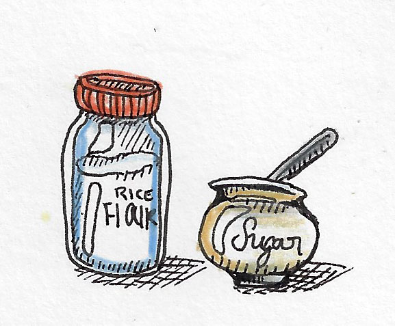

Gluten Free
Blueberry Sour Cream Pie



Serves: 8
Prep Time: 15 min
Cook Time: 40 min
| Ingredients |
| Pie Crust |
Gluten Free Pie Crust
| Filling |
2 tablespoons rice flour
3/4 cups sugar
2 3/4 cups blueberries
2 1/2 tablespoons vanilla extract
1 cup sour cream
1 egg
| Crumble |
2 tablespoons butter
3 tablespoons rice flour
1 1/2 tablespoons sugar
Optional: finely chopped nut of choice
| Instructions |
1
Preheat the over to 400˚F.
2
Mix flower and sugar in a bowl.
3
In a separate bowl combine egg, vanilla extract and sour cream.
4
Combine wet and drying ingredients.
5
Fold fresh or frozen blueberries into the mixture.
6
Put mixture in pan. Cover edges of crusts with aluminum foil, remove after 25 min. Bake for 40.